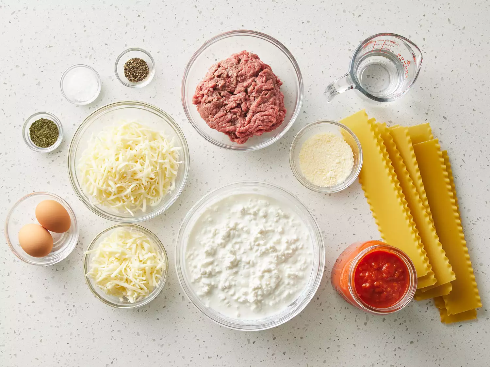

Home
Lasagna
Lasagna is a classic Italian dish that is a family favorite. It is a great dish to make for a crowd or to have as
leftovers for the week. This recipe is a classic lasagna recipe that is made with a meat sauce, ricotta cheese
mixture, and mozzarella cheese. It is a delicious and comforting dish that is perfect for any occasion.
Ingredients

- 1 pound ground beef
- 1 onion, chopped
- 2 cloves garlic, minced
- 1 (15 ounce) can tomato sauce
- 1 (6 ounce) can tomato paste
- 1 1/2 teaspoons salt
- 1 teaspoon dried oregano
- 1 (12 ounce) package lasagna noodles
- 12 ounces ricotta cheese
- 1 egg
- 3/4 teaspoon salt
- 3/4 pound mozzarella cheese, sliced
- 3/4 cup grated Parmesan cheese
Directions
- In a large skillet over medium heat, cook the ground beef, onion, and garlic until brown. Add the tomato sauce,
tomato paste, salt, and oregano and stir until well combined. Cook until heated through.
- Bring a large pot of lightly salted water to a boil. Add the lasagna noodles and cook for 8 to 10 minutes or until
al dente; drain.
- In a mixing bowl, combine ricotta cheese with egg, remaining salt, and Parmesan cheese.
- Preheat oven to 375 degrees F (190 degrees C).
- To assemble, spread 1 1/2 cups of meat sauce in the bottom of a 9x13-inch baking dish. Arrange 6 noodles
lengthwise
over meat sauce. Spread with one half of the ricotta cheese mixture. Top with a third of mozzarella cheese slices.
Spoon 1 1/2 cups of meat sauce over mozzarella, and sprinkle with 1/4 cup Parmesan cheese. Repeat layers, and top
with remaining mozzarella and Parmesan cheese. Cover with foil: to prevent sticking, either spray foil with cooking
spray, or make sure the foil does not touch the cheese.